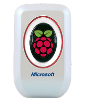

Welcome to myDoor!

myDoor is a Raspberry Pi based automated door opener using a Microsoft Fingerprint Scanner for verification and identification. Registered users can have full control of their door remotely online at any time.
Key Features:
- Automated recognition and identification of registered fingerprints
- Online enrollment and regulation of allowed fingerprints
- Management of time/day allowed for specific fingerprints
- Remote online opening
- Logging of all attempted opens